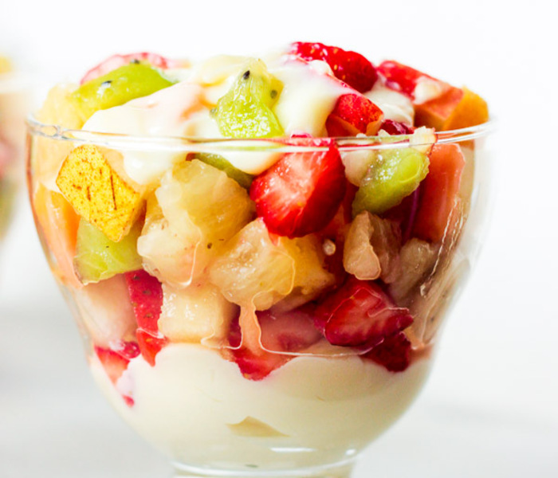

Salada de Fruta

Ingredientes:
- Frutas picadas: 4 xícara de chá
- Leite condensado: 1 lata
- Limão: 1 unidade
Modo de Preparação:
Bata no liquidificador o leite condensado e o suco de limão até ficar com textura
consistente (1 min).
Lave, descasque e pique as frutas.
Distribua o creme em taças, coloque as frutas e cubra com mais creme. Leve para geladeira e
deixe gelar por 1 hora.
Sirva em seguida.